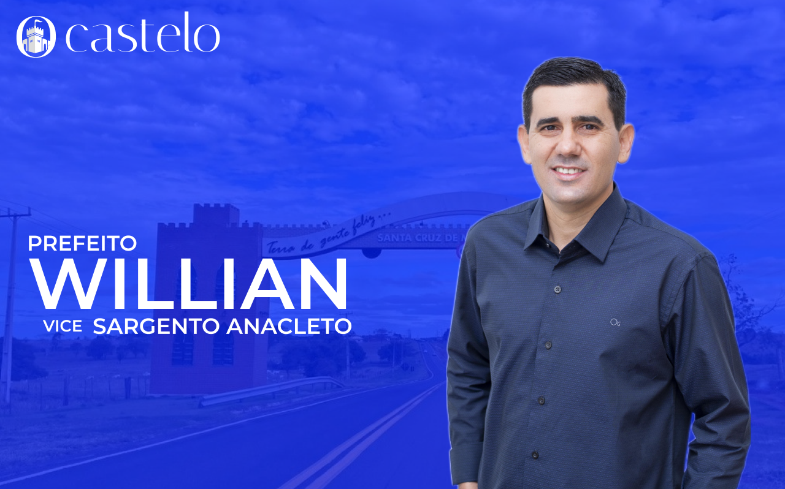

Candidato Willian - Eleições 2024
As eleições estão cada vez mais perto, precisamos escolher bem quem vai nos representar durante os proximos 4 anos, conheça um pouco da historia do candidato Willian do PL.
Willian nasceu no distrito de Santa Esmeralda em 14 de janeiro de 1980. Ele exerceu o cargo de secretário por 8 anos no governo do prefeito Zé Maria e mais 8 anos no governo do prefeito Fran Boni, totalizando 16 anos na função — um feito inédito na história de Santa Cruz de Monte Castelo
Apoiado pelo deputado estadual Romanelli e pelo deputado federal Giacobo, que sempre estão presentes nos projetos de Santa Cruz de Monte Castelo.
Votação Virtual
Agora você pode participar da votação virtual para escolher o seu prefeito e vereador favoritos! Com apenas alguns cliques.
Voltar para a Página Inicial